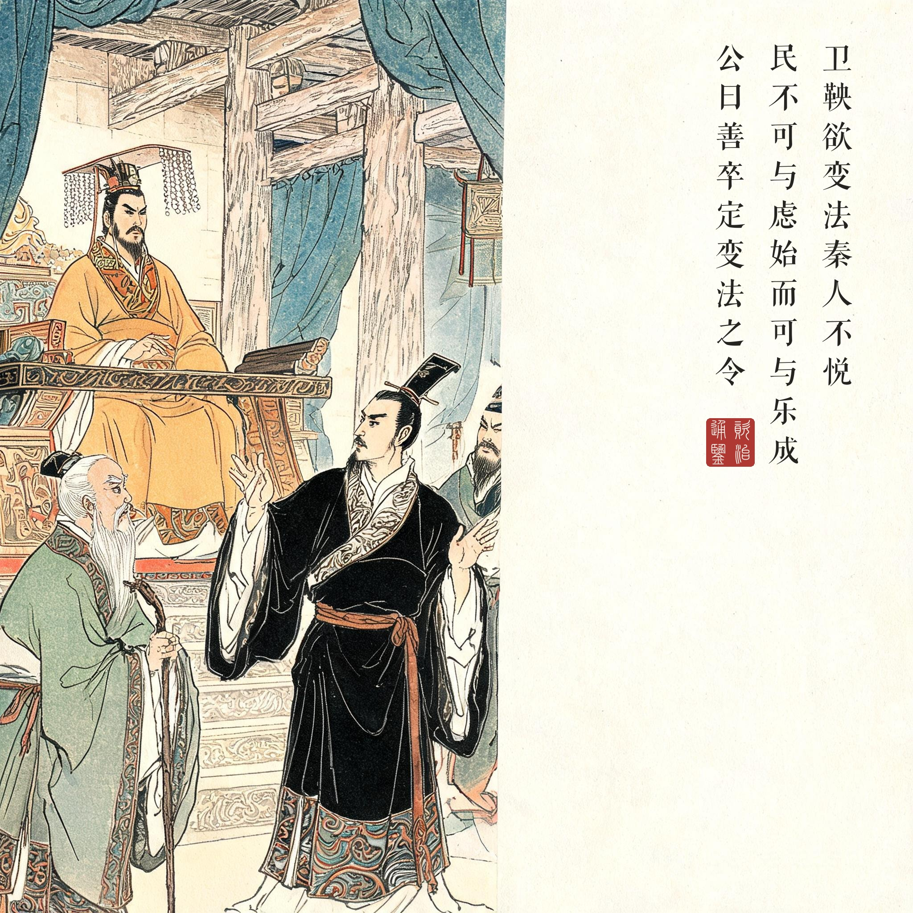
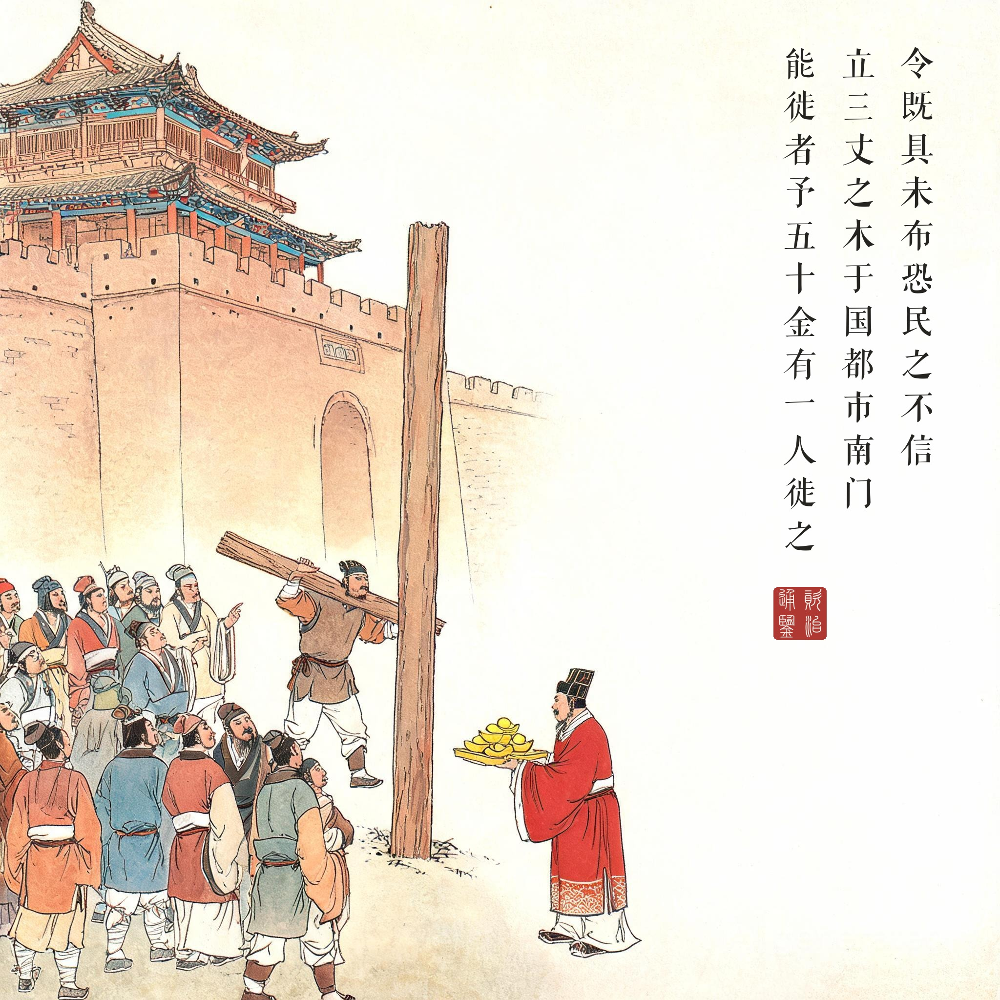
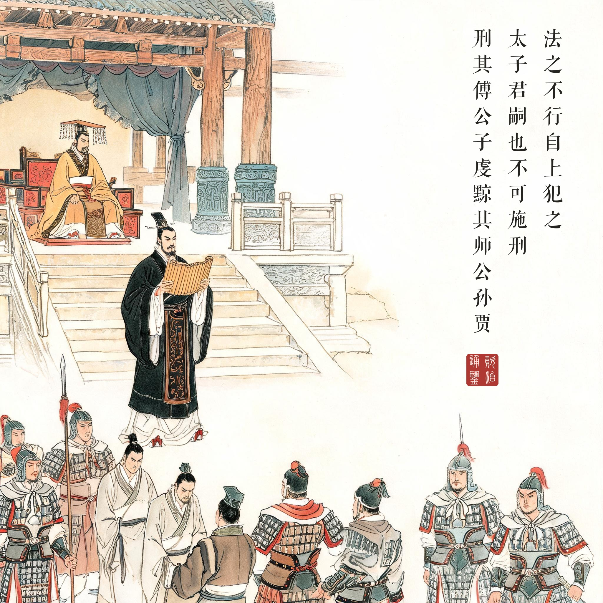
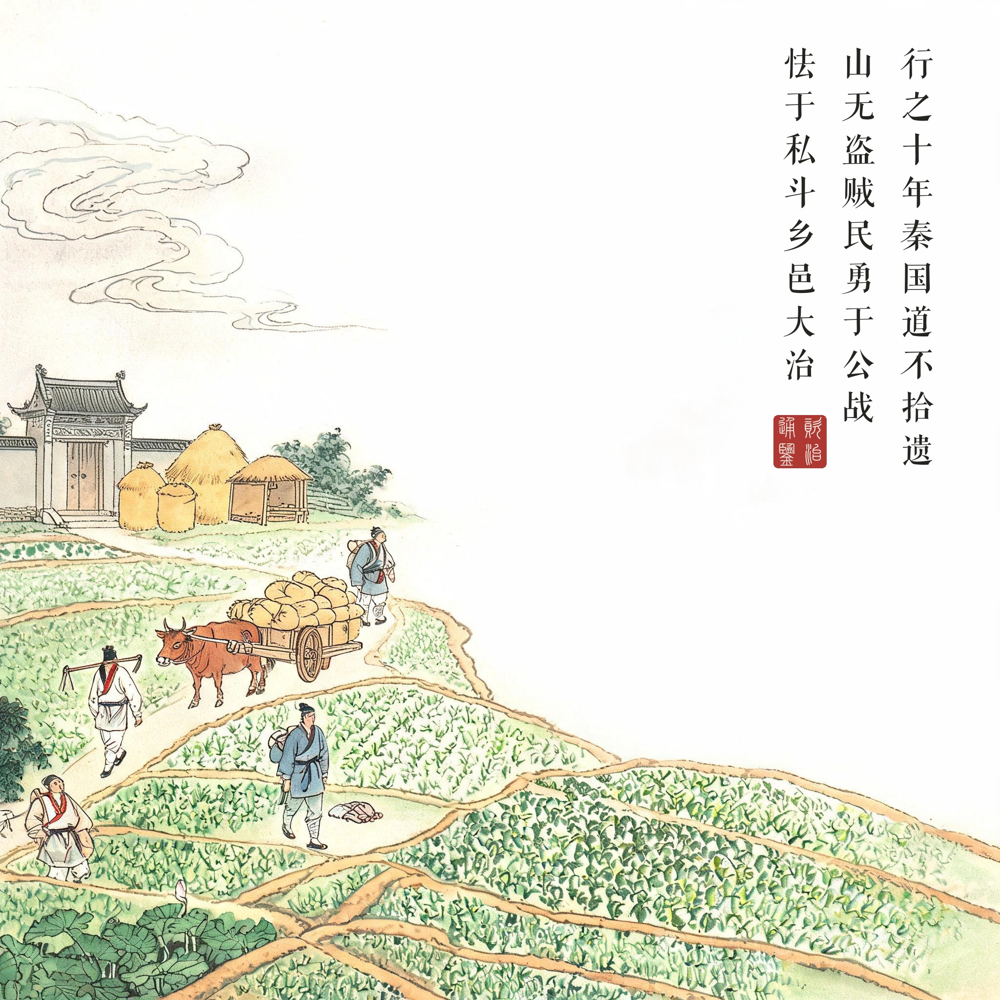

《资治通鉴 · 卷第二 · 周纪二》显王十年（公元前 359 年）
（据 daizhigev20《资治通鉴》底本节录）
卫鞅既至秦，因嬖臣景监以求见孝公，说以富国强兵之术。公大悦，与议国事。
显王十年。卫鞅欲变法，秦人不悦。卫鞅言于秦孝公曰："夫民不可与虑始，而可与乐成。论至德者不和于俗，成大功者不谋于众。是以圣人苟可以强国，不法其故。"甘龙曰："不然。缘法而治者，吏习而民安之。"卫鞅曰："常人安于故俗，学者溺于所闻，以此两者，居官守法可也，非所与论于法之外也。智者作法，愚者制焉；贤者更礼，不肖者拘焉。"公曰："善。"以卫鞅为左庶长，卒定变法之令。
令民为什伍而相收司、连坐，告奸者与斩敌首同赏，不告奸者与降敌同罚。有军功者，各以率受上爵。为私斗者，各以轻重被刑大小。僇力本业，耕织致粟帛多者，复其身。事末利及怠而贫者，举以为收孥。宗室非有军功论，不得为属籍。明尊卑爵秩等级，各以差次名田宅、臣妾、衣服。有功者显荣，无功者虽富无所芬华。
令既具未布，恐民之不信，乃立三丈之木于国都市南门，募民有能徙置北门者予十金。民怪之，莫敢徙。复曰："能徙者予五十金！"有一人徙之，辄予五十金。乃下令。
令行期年，秦民之国都言新令之不便者以千数。于是太子犯法。卫鞅曰："法之不行，自上犯之。太子，君嗣也，不可施刑。刑其傅公子虔，黥其师公孙贾。"明日，秦人皆趋令。
行之十年，秦国道不拾遗，山无盗贼，民勇于公战，怯于私斗，乡邑大治。秦民初言令不便者，有来言令便。卫鞅曰："此皆乱法之民也！"尽迁之于边。其后民莫敢议令。
卫鞅到了秦国，通过宠臣景监求见秦孝公，以富国强兵之术游说，孝公大喜，与他共议国事。
周显王十年，卫鞅要推行变法，秦国人都不乐意。卫鞅对孝公说："老百姓不能与他们谋划开创，只能与他们分享成果。讲至德的人不必迎合世俗，成大功的人不必与众人商议。只要能使国家强盛，圣人不必效法旧章。"老臣甘龙反对："不对。按老法子治国，官吏熟练、百姓安定。"卫鞅驳道："常人安于旧俗，书生困于所学——这两种人当官守法还行，不配和他们讨论法度之外的事。聪明人制定法则，愚蠢人受其约束；贤能者变革礼制，无能者拘守旧规。"孝公说："好。"任命卫鞅为左庶长，终于定下变法之令。
新令让民众编为什伍、互相纠察连坐：告发奸人与斩敌首同赏，知情不告与降敌同罚；立军功的按标准受爵，私斗的按轻重处刑；勤于农耕纺织、多缴粟帛的免除徭役，经商或懒惰致贫的连同妻儿罚作奴婢；宗室没有军功，不得列入宗籍——尊卑爵级，从穿衣住宅到仆妾待遇，全按功劳分等。
命令已经拟好还未颁布，卫鞅怕百姓不信，就在国都市场南门立起一根三丈长的木头，招募能把木头搬到北门的人，赏十金。百姓觉得古怪，没人敢动。卫鞅又宣布："能搬的赏五十金！"有一个人把木头搬了过去，当场就得到五十金。于是颁布新令。
新令推行一年，秦民到国都诉说新法不便的数以千计。这时太子触犯了新法。卫鞅说："法令推行不下去，是因为上面的人先犯。太子是国君继承人，不能施刑——处罚他的师傅公子虔，给他的老师公孙贾黥面。"第二天，秦国人就都遵从新令了。
新法推行十年，秦国路不拾遗、山无盗贼，百姓勇于为国作战、怯于私下斗殴，乡邑大治。当初说新法不便的秦民，又有人来夸新法好。卫鞅说："这些都是乱法之民！"全部迁到边城。此后再没人敢议论法令。
臣光曰：夫信者，人君之大宝也。国保于民，民保于信。非信无以使民，非民无以守国。是故古之王者不欺四海，霸者不欺四邻，善为国者不欺其民，善为家者不欺其亲。不善者反之：欺其邻国，欺其百姓，甚者欺其兄弟，欺其父子。上不信下，下不信上，上下离心，以至于败。所利不能药其所伤，所获不能补其所亡，岂不哀哉！昔齐桓公不背曹沫之盟，晋文公不贪伐原之利，魏文侯不弃虞人之期，秦孝公不废徙木之赏。此四君者，道非粹白，而商君尤称刻薄，又处战攻之世，天下趋于诈力，犹且不敢忘信以畜其民，况为四海治平之政者哉！
白话译文：司马光评说：信用，是君主最大的宝物。国家靠人民保全，人民靠信用维系。没有信用就无法驱使民众，没有民众就无法守卫国家。所以古代称王的人不欺骗天下，称霸的人不欺骗邻国，善于治国的君主不欺骗自己的百姓，善于治家的人不欺骗自己的亲人。不善的人反其道而行：欺骗邻国、欺骗百姓，更甚者欺骗兄弟父子。上不信下、下不信上，上下离心，直到败亡——所得到的一点利益，医治不了它造成的创伤；所捞到的一点收获，弥补不了它带来的损失，岂不悲哀！从前齐桓公不背弃曹沫劫盟之约，晋文公不贪图攻取原邑之利，魏文侯不失与虞人打猎之约，秦孝公不废徙木立信之赏。这四位君主，德行并非纯粹无瑕，商君尤其以刻薄著称，又身处攻伐争战之世、天下竞相欺诈逞力，尚且不敢忘记用信用来养护民众，何况要建立四海升平之政的人呢！
变法为什么从"信"开始。新法拟好不颁，先在南门立一根木头：搬过去，赏金从十金翻到五十金——商鞅买的不是一根木头，是官府言出必践的信用。司马光紧接这一段写下全书最长的一篇议论之一（"信者人君之大宝"），把徙木立信与齐桓不背曹沫之盟、晋文不贪伐原之利并列为"乱世犹不敢忘信"的典范；同一篇里他也毫不客气地点出"商君尤称刻薄"——立信是给百姓的，刻薄也是刻在百姓身上的。信用与严酷，正是商鞅的一体两面。
法之不行，自上犯之。新法推行第一年，诉说不便的千余人只是序曲，真正的考验是太子犯法。商鞅不能对储君用刑，便"刑其傅公子虔，黥其师公孙贾"——拿太子的师傅开刀，等于把鞭子抽在了最高层身上。第二天，秦国人都遵从新令了。这一幕是中国法治史上最著名的桥段之一：法的权威不在条文有多密，而在它敢不敢碰"上"。
十年之后。道不拾遗、山无盗贼、民勇于公战——这十二个字是战国变法所能达到的最高评语。但本回的画外，还有商鞅人生的下半场（下文通鉴即叙）：渭水论囚水尽赤、赵良苦谏不听，孝公一死，公子虔之徒告其谋反，商君逃亡边关，客店主人说"商君之法，舍人无验者坐之"，把他挡在了自己立下的法之外——作法自毙，天下皆知。而秦国这部由他上紧的发条，再没有停下来，直到六国尽灭。